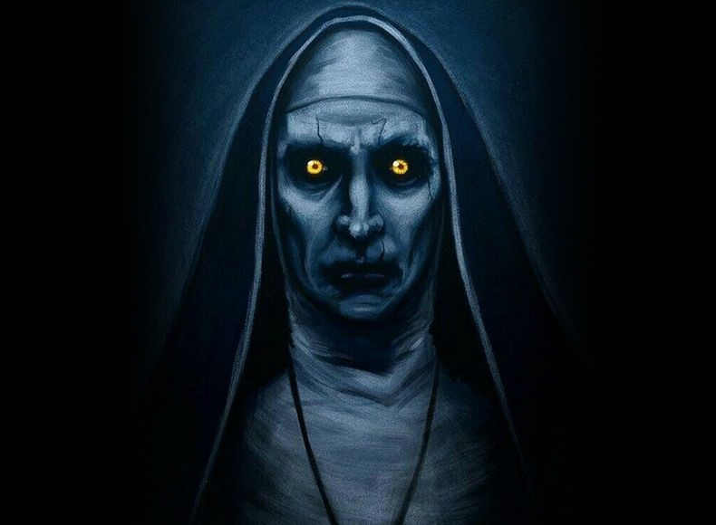
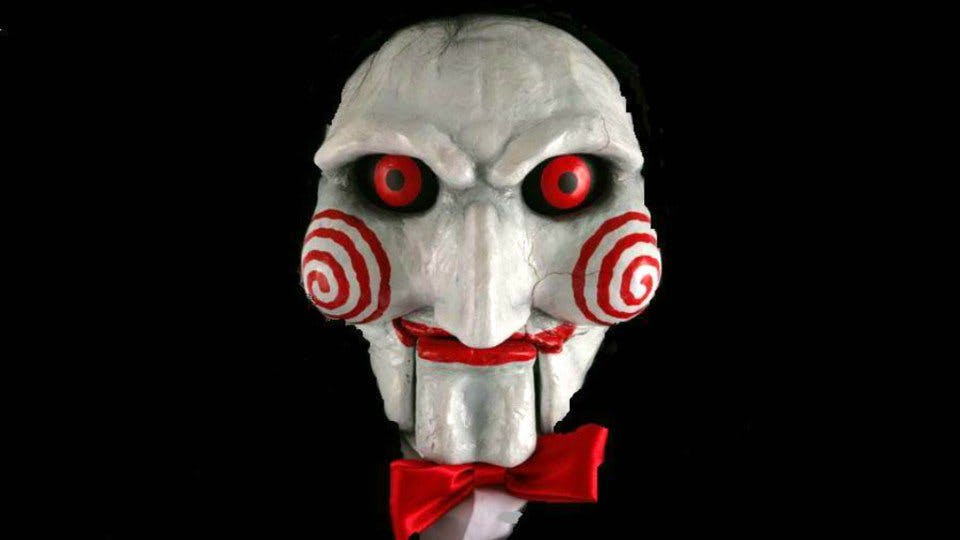

LE CHASSEUR
Le chasseur est le personnage très actif de notre équipe,
doté d'un instinct très aiguisé en matière de chasse au paranormal.
Le chasseur s'est avéré être un de nos meilleurs enquêteurs.

Nous vous présentons le Maire de la commune des Ghostwilders.
Personnalité très influente, il nous a aidé à recenser
toutes les histoires surnaturelles du village.
Ici nous retrouvons la sorcière, elle est lourdement équipée.
Gâce à ses nombreuses incantations, on a pu retrouver des lieux cachés.
Elle nous a permis de lutter contre les forces obscures qui nusisaient à nos enquêtes.
La villageoise est très connue du village.
Grâce à ses connaissances, elle nous a aidé à retrouver
de nombreuses victimes d'histoires paranormales.
La petite fille de notre équipe s'est montrée très efficace dans la chasse au paranormal.
Elle a pu espionner des suspects, retrouvé des victimes.
Le loup est un personnage de notre équipe très particulier.
Ancienn prisonnier, on l'a intégré à notre équipe récemment
car seul lui est capable d'avoir la logique et le raisonnement d'un meurtrier.
Il nous a été d'une aide sans faille.
Le chasseur est le personnage très actif de notre équipe,
doté d'un instinct très aiguisé en matière de chasse au paranormal.
Le chasseur s'est avéré être un de nos meilleurs enquêteurs.
Notre équipe ne remerciera jamais assez la voyante avec qui on collabore depuis déjà quelques années.
Elle nous a aidé à reconstituer des scènes de crimes et ainsi retrouver des victimes.
Alliée de la sorcière, on a pu entrer en communication avec l'au-delà grâce à leurs dons.